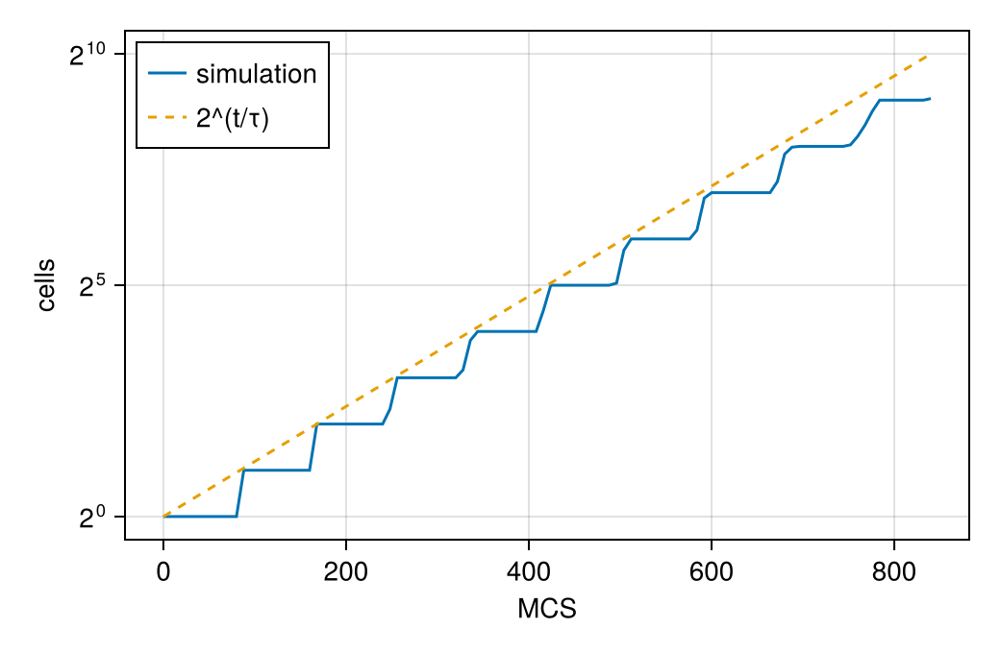

A growing monolayer (OpenVT benchmark)
A single cell on a dish grows, divides, and its daughters do the same, until a colony covers the dish. The OpenVT project (Open Virtual Tissues) uses this as a benchmark for comparing cell-based simulators: every framework implements the same growth and division rules, and the colony's cell count, area and radius are compared over time. This page builds the cellular Potts version, with the parameter set of the Artistoo implementation.
What you will learn
- how a per-cell target area grows through an
@after_mcsrule, and how that rule expresses contact inhibition; - how
@dividetriggers division on a size threshold, chooses the division plane and resets the daughters' variables; - how to reserve room for new cells, and measure a population's doubling time.
The cell sorting page explains the parts every model shares.
The benchmark
The OpenVT reference models specify the monolayer by rules rather than equations:
- each cell has a target area $V_T$ and an area constraint $\lambda (V - V_T)^2$; cell–cell and cell–medium contact energies are equal, so there is no net adhesion;
- $V_T$ grows by $A_0/\tau$ per MCS, so an unconstrained cell doubles its area in $\tau$ MCS;
- a cell divides when its area reaches $2A_0$, along a uniformly random plane, and both daughters restart at $V_T = A_0$;
- contact inhibition (type 1): a cell grows only while its area is at least $\beta V_T$. A compressed cell, squeezed below its target by its neighbours, stops growing.
The paper run
The finished model, built step by step below, run at the paper's size, with the paper's starting state, parameters and run length. It is computed outside the docs build:
Paper run — OpenVT growing monolayer, Artistoo set, no contact inhibition: one cell to N = 10137 cells (benchmark: until N = 10⁴) at 1405 MCS on 800×800 (constructor default 400×400 is too small for 10⁴ cells), seed 1.
The rest of this page builds the model and runs it at a size that takes seconds.
using Potts, PottsModelsStep 1: the lattice
@structural_parameters begin
lattice = (400, 400)
end
@lattice Lattice(lattice; boundary = Closed(), neighborhood = Moore(1))
@relations proposal = Moore(1)A closed 400 × 400 lattice (the Artistoo reference file uses 1100 × 1100) with Moore contacts and copies.
Step 2: cell kinds
@kinds medium cellStep 3: parameters
@parameters begin
A₀ = 25.0
λ = 20.0
τ = 84.0
β = 0.0
T = 20.0
J[kind, kind] = [0.0 20.0; 20.0 20.0]
endThe Artistoo parameter set: $A_0 = 25$, $\lambda = 20$, a doubling time $\tau = 84$ MCS and $T = 20$. Both contact energies are 20. β = 0 switches contact inhibition off (the benchmark's baseline); its inhibited runs use $\beta \approx 0.9$.
Step 4: the target area
@variables V_target(cell) = A₀V_target(cell) is one value per cell. Its default refers to a parameter: a new cell starts at A₀.
Step 5: the energy
cells(cell) => λ * (volume - V_target)^2The area constraint pulls each cell towards its own, growing, target.
contacts => J[kind, kind′]Step 6: growth with contact inhibition
@after_mcs V_target ~ ifelse(volume >= β * Pre(V_target), Pre(V_target) + A₀ / τ, Pre(V_target))After every MCS each cell whose area is at least $\beta V_T$ adds $A_0/\tau$ to its target; the others keep it. Pre(V_target) is the value before the update, and volume the cell's current area. With β = 0 the condition always holds.
Step 7: division
@divide cells(cell) when = volume >= 2A₀, along = RandomPlane(), V_target => A₀@divide names the cells that may divide (cells(cell)), the condition (when), the division plane (along = RandomPlane(), a uniformly random orientation through the cell's centre) and what the daughters' variables become: both start again at $V_T = A_0$.
Step 8: the sweep
@sweep Metropolis(; temperature = T)
endThe whole model
@potts_model GrowingMonolayer begin
@structural_parameters begin
lattice = (400, 400)
end
@lattice Lattice(lattice; boundary = Closed(), neighborhood = Moore(1))
@relations proposal = Moore(1)
@kinds medium cell
@parameters begin
A₀ = 25.0
λ = 20.0
τ = 84.0
β = 0.0
T = 20.0
J[kind, kind] = [0.0 20.0; 20.0 20.0]
end
@variables V_target(cell) = A₀
@energy begin
cells(cell) => λ * (volume - V_target)^2
contacts => J[kind, kind′]
end
@after_mcs V_target ~ ifelse(volume >= β * Pre(V_target), Pre(V_target) + A₀ / τ, Pre(V_target))
@divide cells(cell) when = volume >= 2A₀, along = RandomPlane(), V_target => A₀
@sweep Metropolis(; temperature = T)
endWe run it on the constructor's 400 × 400 lattice with the Artistoo parameters:
dims = (400, 400)
@named mono = GrowingMonolayer()PottsSystem mono on 400×400 (2D)
kinds: medium, cell
parameters: A₀, λ, τ, β, T, J
variables: V_target(cell)
energy cells(1) => ((-V_target(t) + volume)^2)*λ
energy contacts => Potts.at2(J, kind, kind′)
@after_mcs V_target(t) ~ ifelse(volume >= (Pre(V_target(t))*β), Pre(V_target(t)) + A₀ / τ, Pre(V_target(t)))
divide cells(1) when volume >= (2A₀)
sweep: metropolis(temperature = T)The starting state
One square cell of area $A_0$ at the centre. A Tiling layer restricted to a 5 × 5 region makes exactly one 5 × 5 box. It is the state that openvt_monolayer_state builds:
u0 = layout(Tiling((5, 5); region = (198:202, 198:202), kinds = [:cell]), dims)
u0[1].second == openvt_monolayer_state()[1].secondtrueSolving
840 MCS are ten doubling times $\tau$. New cells need room in the state: capacity is the largest number of cells the run can hold.
prob = PottsProblem(mono, u0, (0, 840); seed = 1, capacity = 4096)
sol = solve(prob, SequentialCPM(); saveat = 0:8:840)PottsSolution: retcode Success, 106 saved states, 840 MCS
t: [0, 8, 16, 24, 32, …, 808, 816, 824, 832, 840]The run as a movie
All cells are of one kind, so the movie colours them by identity (CellIdentityEncoding), and zooms in on the central 180 × 180 sites, where the colony grows, through the axis limits:
using MakiePotts, CairoMakie
record_potts("openvt/monolayer.mp4", sol; framerate = 15, title = "Growing monolayer",
encoding = CellIdentityEncoding(), figure = (; size = (440, 440)), axis = (; limits = (110, 290, 110, 290)))Measuring growth
The benchmark's first observable is the number of cells. sol[:volume] gives every cell's area at every saved time (zero for slots not yet used), so the live cells are those with a positive area. If every cell grew freely, the count would double every $\tau$ MCS; the dashed line is $2^{t/\tau}$:
ncells = [count(>(0), v) for v in sol[:volume]]
CairoMakie.activate!(type = "png")
fig = Figure(size = (520, 340))
ax = Axis(fig[1, 1]; xlabel = "MCS", ylabel = "cells", yscale = log2)
lines!(ax, sol.t, ncells; label = "simulation")
lines!(ax, sol.t, 2 .^ (sol.t ./ 84); linestyle = :dash, label = "2^(t/τ)")
axislegend(ax; position = :lt)
fig
The doubling time fitted over the second half of the run:
half = sol.t .>= 420
tm = sum(sol.t[half]) / count(half)
slope = sum((sol.t[half] .- tm) .* log2.(ncells[half])) / sum(abs2, sol.t[half] .- tm)
1 / slope90.51314879055671It is somewhat longer than $\tau = 84$: a cell's area lags its growing target, and a cell divides only when its area itself reaches $2A_0$.
Differences from the benchmark
| Artistoo reference file | Here | |
|---|---|---|
| Lattice | 1100 × 1100 | 400 × 400 (constructor default); enough while the colony stays clear of the walls, not for the benchmark's 10⁴ cells |
| Division size | random, $N(2, 0.4) \cdot A_0$ | exactly $2A_0$, as in the benchmark's written baseline specification |
The energies, growth law, division plane and parameters are the Artistoo set. This page runs the uninhibited baseline (β = 0) for ten doubling times; the benchmark also runs contact-inhibited colonies (β ≈ 0.9).
This model ships as OpenVTGrowingMonolayer
PottsModels exports this model as OpenVTGrowingMonolayer; the test suite checks that it compiles to the same code and defaults as GrowingMonolayer above.
@named openvt = OpenVTGrowingMonolayer()PottsSystem openvt on 400×400 (2D)
kinds: medium, cell
parameters: A₀, λ, τ, β, T, J
variables: V_target(cell)
energy cells(1) => ((-V_target(t) + volume)^2)*λ
energy contacts => Potts.at2(J, kind, kind′)
@after_mcs V_target(t) ~ ifelse(volume >= (Pre(V_target(t))*β), Pre(V_target(t)) + A₀ / τ, Pre(V_target(t)))
divide cells(1) when volume >= (2A₀)
sweep: metropolis(temperature = T)Its start is openvt_monolayer_state(). Contact inhibition is a parameter, so the benchmark's inhibited runs start from [openvt_monolayer_state(); :β => 0.9].
PottsModels.OpenVTGrowingMonolayer — Function
OpenVTGrowingMonolayer(; name, lattice = (400, 400), …)The OpenVT growing-monolayer benchmark (OpenVT reference models, monolayer/) with the Artistoo parameter set. One cell grows into a colony on a closed lattice:
- area constraint
λ (volume - V_target)²with no net adhesion (J_cc = J_cM = 20); - the target area grows by
A₀/τper MCS, so an unconstrained cell doubles inτMCS; - a cell divides at the deterministic size
2A₀along a uniformly random plane, and both daughters restart atV_target = A₀; - type-1 contact inhibition: a cell grows only while
volume ≥ β V_target.β = 0(the default) is the uninhibited baseline; the benchmark's inhibited runs useβ ≈ 0.9.
Seed with openvt_monolayer_state. The benchmark measures cell count, colony area and radius against time.
PottsModels.openvt_monolayer_state — Function
openvt_monolayer_state(; lattice = (400, 400), A₀ = 25)One square cell of area ≈ A₀ at the lattice centre: [ownership => σ, kind => [:cell]].